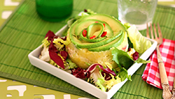
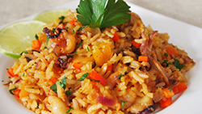
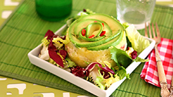
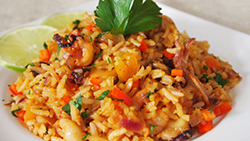
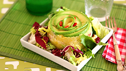
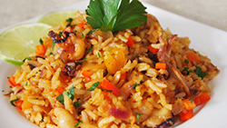

 
 
Hoy en día cuando un visitante o incluso un peruano se sientan a degustar alguno de los platos peruanos, quizá no sabe que está experimentando el resultado de una fascinante evolución de comidas y culturas. Con la llegada de los españoles se introdujo a esta parte de américa nuevas especies de animales, frutas y plantas. La cocina peruana representa una simbiosis de culturas culinarias. No sólo tiene hondas raíces pre incas, incas y coloniales hispanas, sino también que a lo largo de su historia ha incorporado estilos gastronómicos mulatos, europeos y orientales.
Cada región costera, diferente en fauna y flora, adapta su cocina de acuerdo a los productos de sus aguas. El chupe de camarón; plato originario y típico del departamento de Arequipa, es uno de los platos más refinados de la costa peruana. Se trata de una sopa espesa a base de pescado y camarones, así como también papas, leche y ají. En el Perú existen variedades de chupes, como: Chupe de habas, Chupe de Zapallo, Chupe de Olluquito, etc. Los choritos a la chalaca son un aperitivo popular en épocas de verano. La cocina costeña cuenta con más de 250 postres tradicionales desde el siglo XIX, esta gran variedad se ha originado principalmente en las ciudades costeras desde la época del Virreinato del Perú, como el suspiro a la limeña, los picarones, el turrón, la mazamorra morada, entre otros.
 